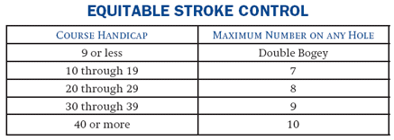

Section 4 ADJUSTING HOLE SCORES
Definitions
Within each section, all defined terms are in italics and are listed alphabetically in Section 2 - Definitions.
The game of golf is based on the premise that a player will play as well as the player can play. Under the USGA Handicap System, each player is required to record a hole score for a hole not finished, not played, or not played under "The Rules of Golf," and to reduce any hole score when it is higher than the maximum number allowed under Equitable Stroke Control.
A player who starts, but does not complete a hole or is conceded a stroke must record for handicap purposes the most likely score. The most likely score may not exceed the player's Equitable Stroke Control limit, defined in Section 4-3. This most likely score should be preceded by an "X." (See Decision 4-1/1.)
There is no limit to the number of unfinished holes a player may have in a round, provided that failure to finish is not for the purpose of handicap manipulation.
Example 1: A and B are partners in a four-ball stroke play competition. On a hole on which neither player receives a handicap stroke, A lies two, 18 feet from the hole. B lies two, 25 feet from the hole. B holes a putt for a 3. A picks up on the hole, because A cannot better B's score. A records X-4 on the scorecard because 4 is A's most likely score.
Example 2: A and B are playing a match. On a hole on which neither player receives a handicap stroke, A has holed out in 4; B has a 30-foot putt for a 5. B has lost the hole, and picks up. B records X-6 on the scorecard because 6 is B's most likely score.
Example 3: A and B are playing a match. On a hole on which neither player receives a handicap stroke, A is one foot from the hole, lying 4. B is 10 feet from the hole, lying 3. B putts and misses. They both concede a half. Both players record X-5 because that is their most likely score.
If a player does not play a hole or plays it other than under the principles of the Rules of Golf (except for preferred lies), the score recorded for that hole for handicap purposes must be par plus any handicap strokes the player is entitled to receive on that hole. This hole score, when recorded, should be preceded by an "X."
Example: A player with a Course Handicap of 10 receives a handicap stroke on the first 10 allocated handicap-stroke holes. If the player does not play the sixth allocated handicap-stroke hole, which is a par 4, because of construction on the green, the player must record a score of par plus one for handicap purposes, or X-5. (See Decision 4-2/1 and Section 5-2b.)
All scores for handicap purposes, including tournament scores, are subject to the application of Equitable Stroke Control (ESC). This mandatory procedure reduces high hole scores for handicap purposes in order to make handicaps more representative of a player's potential ability.
A handicap determined from scores to which ESC has not been applied may not be termed a Handicap Index.
ESC
is used when a player's actual or most likely score exceeds a maximum number, based on the table below, for the player's Course Handicap from the tees played. (For nine-hole Equitable Stroke Control table, See Section 10-5c.)
|  |
Example: A player with a Course Handicap of 6 has a maximum number of par plus two strokes (double bogey) for any hole. A player with a Course Handicap of 13 has a maximum number of 7 for any hole regardless of par. A player with a Course Handicap of 42 has a maximum number of 10 for any hole.
A player without an established Handicap Index must use the maximum Handicap Index of 36.4 for men, or 40.4 for women, converted to a Course Handicap, to determine a maximum ESC number.
There is no limit to the number of individual hole scores on which an Equitable Stroke Control reduction may be made.
Example: The round of a player with a Course Handicap of 23 includes individual hole scores of 9, 10, and 11. ESC reduces each hole score to the applicable maximum of 8. The player's adjusted gross score enters the scoring record for handicap purposes 6 strokes less than had ESC not been applied (9-8) + (10-8) + (11-8) = 6.
In consulting the Equitable Stroke Control table, a player uses the Course Handicap derived from that player's actual Handicap Index, disregarding any strokes added or subtracted because of a condition of competition, a handicap allowance, players competing from different tees, or men and women from the same tees. (See Sections 3-5, 9-3c, and 9-4.)
Example 1: A player with a Handicap Index of 35.4 and a Course Handicap of 39 might enter a competition in which the conditions of the competition establish a maximum Handicap Index limit of 25.4, which would yield a Course Handicap of 28. When applying ESC, that player uses the Course Handicap of 39.
Example 2: A player with a Course Handicap of 30 might play in a four-ball stroke play competition in which the handicap allowance is 90 percent, or 27 strokes. When applying ESC, that player uses the Course Handicap of 30.
Example 3: A player with a Handicap Index of 25.4 and a Course Handicap of 28 might enter a competition in which players are competing from different tees. The difference between the higher-rated set of tees (a USGA Course Rating of 73.0) and the lower-rated set of tees (a USGA Course Rating of 71.2) is 2 strokes (73.0-71.2=1.8 rounded to 2). From the course with the USGA Course Rating of 73.0, the player would receive two additional strokes, which would give the player a Course Handicap of 30 (see Decision 3-5/1 for the only exception). However, when applying ESC, the player uses a Course Handicap of 28.
Example 4: A player with a Handicap Index of 25.4 and a Course Handicap of 28 is in a tournament where the player shot a score of 92 without applying ESC. The player turns in the score of 92 for the tournament, but must include any ESC adjustments when posting for handicap purposes.
Under no circumstances must the procedures of this section be used by a player to manipulate a Handicap Index. The Handicap Index of a player who uses this section for such a purpose must be adjusted or withdrawn by the Handicap Committee under Section 8-4.